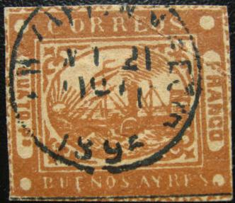
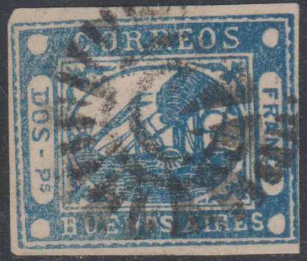
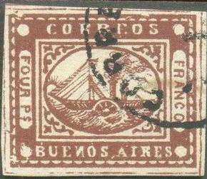
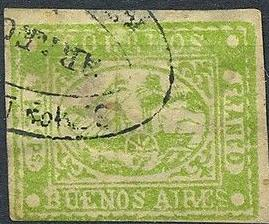
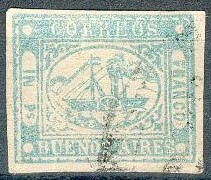

(Probably genuine stamps)
Buenos Ayres
Return To Catalogue - Buenos Aires 1858 forgeries part 2 - Buenos Aires 1858 issue - Argentine
Note: on my website many of the
pictures can not be seen! They are of course present in the
catalogue;
contact me if you want to purchase it.
ATTENTION, MANY OF THE STAMPS OF BUENOS AIRES ARE FORGERIES OR REPRINTS!
(Probably genuine stamps)
In 'Le Timbre Poste' by Moens of 1883 No. 247, page 55, a certain L.D. says that he received deceptive forged stamps 2 years earlier from the persons H.A, P.G, F.S, and R.H. de S. I do not know what the initials stand for.
The above forgeries are very common ones and are virtually worthless. Note the position of the white dots in the corners and how they are sometimes connected to the outer frames. This appears to be identical for each forgery (of the same value). The borders are way too wide (genuine stamps are printed very closely together). I've seen these forgeries with forged cancels (although most of them are uncancelled). I've been told that they were made in 1888.


Forgeries or some kind of reprints?

Another forgery with 'CORREOS' very large and 'BUENOS AYRES'
instead of 'BUENOS-AIRES' (no '-' and 'Y' instead of 'I'). The
forgery next to it also has a 'Y' instead of 'I', but appears to
be a different type (the cancel is 1892?).
The next forgeries have been made by the forger Fournier:
(Fournier forgeries)
In my opinion, there is almost always a thicker distortion of the wavy outer frame line just above the 'S' of 'CORREOS' in the above Fournier forgeries. The 'FRAN' cancel of the blue stamps can be found in 'The Fournier Album of Philatelic Forgeries' (see image below). The cancel on the brown stamp can be found under Argentine in this album 'CORREO NACIONAL DEL ROSARIO FRANCA' in an ellipse. The 4 rs stamp ('CUATO rs') has 'Ps' instead of 'rs' (actually the 'T' should be a 'r' in the genuine stamps, but it resembles more a 'T' with a broken upper left end). Ken Pugh told me that there is also a large dot on the sun's right ray in these Fournier forgeries.
Forged cancels of Argentine of the "Fournier Album of
Philatelic Forgeries".
(Forged cancels of Argentine of the Fournier album, reduced size)
The 'FRANCA' cancel in an ellipse can be found under Ecuador in the Fournier Album, I think it has been misplaced and should be under Buenos Aires (the green Buenos Aires Fournier forgery above bears this cancel).
(The second 'FRANCA' cancel listed as a forged cancel of Ecuador
in the Fournier Album)
It should be noted that Fournier offered two kinds of forgeries in his 1914 pricelist, first choice and second choice forgeries.
Other type Fournier forgery (poor printing). It always appears
rather blotchy.
Other forgeries:
 
Note the "-" behind "UN" and "DOS".



Note the flag at the backside of the ship, the inscription
"FOUR PS" instead of "CUATO PS" and the
inverted "N" in "BUENOS". I've seen the 4 p
red and 4 p brown with a "CORREOS
1.7.60. II-III" cancel. The forged cancel "CORREOS
7.1.60 II-III" also appears on other forgeries of Uruguay,
Honduras, Venezuela, Colombia, Brazil etc.
Forgeries with 'BUENOS AIRES' too large:
 


The ship is different in the above three forgeries, also note the
wrong value inscription or the strange "S" of
"AIRES". It looks like some of them have an
"ARREGONDO" cancel which also exists on forgeries of
Uruguay and the 1868 issue of Mexico. Click here for more information about this
"ARREGONDO" cancel.
I have seen the brown forgery with a cancel consisting of four concentric rings, it was offered as being genuine on a prestigious web auction recently. Other forgeries from the same maker:




There are more rays in the sun than on the genuine stamps in this
forgery


{kind=link}
{kind=link}
{kind=link}
{kind=link}
{kind=link}